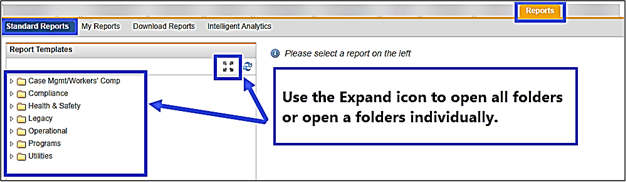
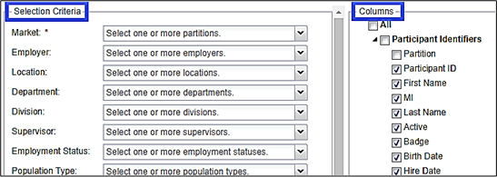
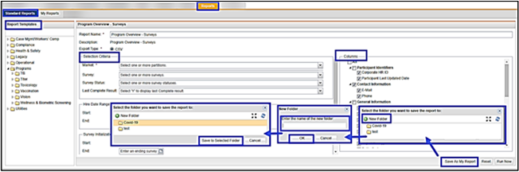
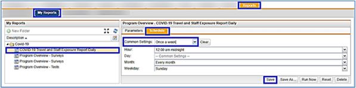

Share a downloaded report with those that have EHS Manager access.
Must have access to the Report tab.
All reports are found under the Reports > Standard Reports. Below are suggested criteria for setting up your Coronavirus reports. This includes filter Selection Criteria, Columns for output, and Auto Scheduling settings. Also included on some items, instructions on what to do with the report results.

You can select the desired Selection Criteria and/or Column outputsto give you the intended report results or use the default criteria that is pre-selected for you.

Saving a Report Template to My Reports
Go to Reports >Standard Reports.
Select the report needed.
Make your selections.
Click Save As My Report to save the report template to your My Reports.
Select New Folder. If the folder already exists select the folder and save to that folder.
Enter the Name of the Folder, e.g. COVID- 19.
Click OK.
Click Save to Selected Folder.

Setting Up a Schedule for the Report to Autorun
To schedule a report to autorun, the report must be in your My Reports.
Go to Reports > My Reports.
Select the folder/report to open.
Click the Schedule tab in the right panel.
In the Common Settings drop down, select the appropriate setting. For example, "Once a week" will run at midnight every Sunday.
Click Save.
Go to My Reports to make any edits or changes to a saved template.

Available Reports
COVID-19 Staff Exposure Survey
This report will provide the survey status, all survey answers, creation date and completion date.
Go to Reports > Standard Reports > Programs > COVID-19 > COVID-19 Staff Exposure Survey.
Edit the Report Name – COVID-19 Exposure Survey and add the date (or what makes sense to you).
Selection Criteria: Select "Employment Status – Active" and "Leave of Absence", and any other criteria as needed.
Column Outputs: You can output all items available or select only the items wanted. Recommended outputs:
Participant Identifiers:
Participant ID
First & Last Name
Job Title
Job Category
Employment Status
General Information – select any needed items:
Occupation
Dept
Population Type
Supervisor
SurveyResults, Reason for Survey, Close Contact, PPE, Symptoms: select all or the data needed.
Click Run Now for an immediate report.
Click Download Reports to view the report results.
Recommendation: Add to your My Report:
Set up to Auto Schedule.
Common Settings = Once a Day.
Review the data and follow-up as necessary.
Travel Screening Survey
This report will provide the survey status, all survey answers, creation date and completion date.
Go to Reports > Standard Reports > Programs > COVID-19 > Travel Screening Survey.
Edit the Report Name – "Travel Screening" and add the date (or what makes sense to you).
Selection Criteria: Select "Employment Status – Active" and "Leave of Absence", and any other criteria as needed.
Column Outputs: You can output all items available or select only the items wanted. Recommended output listed below:
Participant Identifiers:
Participant ID
First & Last Name
Job Title
Job Category
Employment Status
General Information: select any needed items:
Occupation
Dept
Population Type
Supervisor
Survey Results, Reason for Survey, Close Contact, PPE, Symptoms: select all or the data needed.
Click Run Now for an immediate report.
Select the Download Reports option to view the report results.
Optionally, add to your My Report:
Set up to Auto Schedule.
Schedule for 'Once a Day'.
Review the data and follow-up as necessary.
Coronavirus (2019-nCov) PUI Form Details
This report will provide all data charted including test status, travel history, contact, quarantine information, symptoms, comorbidity, hospitalization, diagnostic results, return to work and follow-up.
Go to Reports > Standard Reports > Programs > COVID-19 > Coronavirus (2019-nCOV) PUI Form Details.
Edit the Report Name – "COVID PUI Details" (or what makes sense to you).
Selection Criteria:
Select "Employment Status – Active" and "Leave of Absence".
Select "Test Status – Complete" (if looking to report charted information).
Select any other criteria as needed.
Column Outputs: You can output all items available or select only the items wanted. Recommended output listed below:
Participant Identifiers:
Participant ID
First & Last Name
Job Title
Job Category
Employment Status
General Information – select any needed items:
Occupation
Dept
Population Type
Supervisor
Test Results, Reason for Visit, Performed information, Exposure and Travel History, Close Contact, Quarantine Information, Symptom Review, Hospitalization, Respiratory Diagnostic Results, Specimens for Testing, Public Health, Return to Work - select any output as needed.
Click Run Now for an immediate report.
Click Download Reports to view the report results.
Optionally, add to your My Report:
Set up to Auto Schedule.
Schedule for 'Once a Day'.
Temperature and Symptom Tracker
This report will output all tracked temperatures and symptoms entered by participants.
The Temperature and Symptom Tracker will have a status of Incomplete until the participant has select Submit Final at the end of tracking symptoms. Do not search only for a status of complete because you need to see the data as they enter the information.
Go to Reports > Standard Reports > Programs > Ebola Virus Disease > Exposure > Symptom and 21-Day Symptom Survey.
Edit the Report Name – "Temperature and Symptom Survey".
Selection Criteria: Select "Employment Status – Active" and "Leave of Absence".
Column Outputs: You can output all items available or select only the items wanted. Recommended output listed below:
Click Download Reports to view the report results.
Optionally, add to your My Report:
Set up to Auto Schedule.
Schedule for 'Once a Day'.
Next Steps:
Filter Alert Status column to “Alert”, these are the participants who have a temperature at or above 100.4 or symptoms.
Filter Alert Status column to “Blank”, these are the participants who have a normal temperature and no symptoms.
Incident Details
This report will output all details for incidents created under the Incident tab. Use this report only if using the Incident tab to track multiple participants exposed to COVID-19.
Go to Reports > Standard Reports > Health & Safety >Incident > Incident Details.
Edit the Report Name – Enter an appropriate title for the report.
Selection Criteria:
Enter the Incident ID if you only want the details for that incident.
Select the Incident Type – Coronavirus.
Select Incident Date Range, you can enter just the start date.
Column Outputs: You can output all items available or select only the items wanted. Recommended output listed below:
Incident Information. Select "All".
Injured/Witness Information. Select "All".
Survey Information. Select "All".
Test Information. Select "All".
Demographic Information:
Participant ID
First & Last Name
Employment Status
Corporate HR ID
Dept
Population Type
Supervisor
Job Title
Job Category
Occupation
Click Run Now for an immediate report.
Click Download Reports to view the report results.
Optionally, add to your My Report:
Set up to Auto Schedule.
Schedule for the appropriate cadence.
Incident Summary
This report will output summary details on an individual incident or multiple incidents with no participant information included. Use this report only if using the Incident tab to track multiple participants exposed to COVID-19.
Go to Reports > Standard Reports > Health & Safety > Incident > Incident Summary.
Edit the Report Name – Enter an appropriate title for the report.
Selection Criteria:
Enter the Incident ID if you only want the details for that incident.
Select the Incident Type – Coronavirus.
Select Incident Date Range, you can enter just the start date.
Column Outputs: You can output all items available or select only the items wanted. Recommended output: Summary Information. Select "All".
Click Run Now for an immediate report.
Click Download Reports to view the report results.
Optionally, add to your My Report:
Set up to Auto Schedule.
Schedule for the appropriate cadence.
Other Reports
Located under Reports > Standard Reports > Health & Safety > Injury, Illness or Exposure:
Progress Note Details - Reports by infectious disease exposures for those who become ill from COVID-19.
Progress Note Incident Log - Summary Reports by infectious disease exposures for those who become ill from COVID-19.